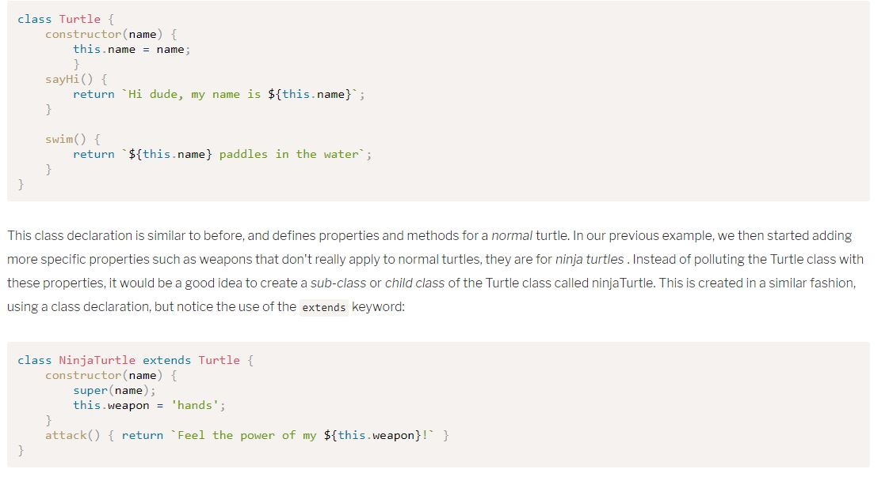

Javascript: Novice to Ninja Chapter 12: Object Oriented Programming in JavaScript
Three main Concepts: encapsulation, polymorphism, inheritance.
Inner workings of object are hidden. Only essential functionalities exposed to end user.
Objects can share methods, but can override them with more specific implementations as needed.
Objects can inherit methods and properties from other objects, and additional functionality can be added through additional properties and methods.
Another way to create new objects:
this used to represent object returned by constructor function.
Instance created using new: EX: const redDice = new Dice(); *Note parenthesis not required unless passing an argument.
Does same as constructor function, just looks more like a class-based declaration
"new" operator used to create an instance, just like with constructor functions.
Returns constructor of an object.
static keyword used to create static methods, which are called by the class directly, rather than instances of the class.
All classes and constructor functions have a prototype property that returns an object. ObjectName.prototype. (property or function) can be used to add methods and properties to an object.
An objects own property is a property with a value unique to the object. Prototype property values are the same across all objects of a class.
If a new method/property is added to the prototype object, any instance of the class inherits the new properties even if instances have already been created.
Object instances can overwrite properties or methids inherited from prototype by assigning a new value to them.
The prototype can be used to add any new properties and methods after the class has been declared. It should be used to define any properties that will remain the same for every instance of the class.
Use extends keyword to create sub/child classes.
It is possible (but usually frowned upon) to add methods to the prototype of JavaScript built in objects, like Number, String, Array, etc. This is called monkey-patching

New objects can be created from other objects usint the Object() constructor function's method: create.